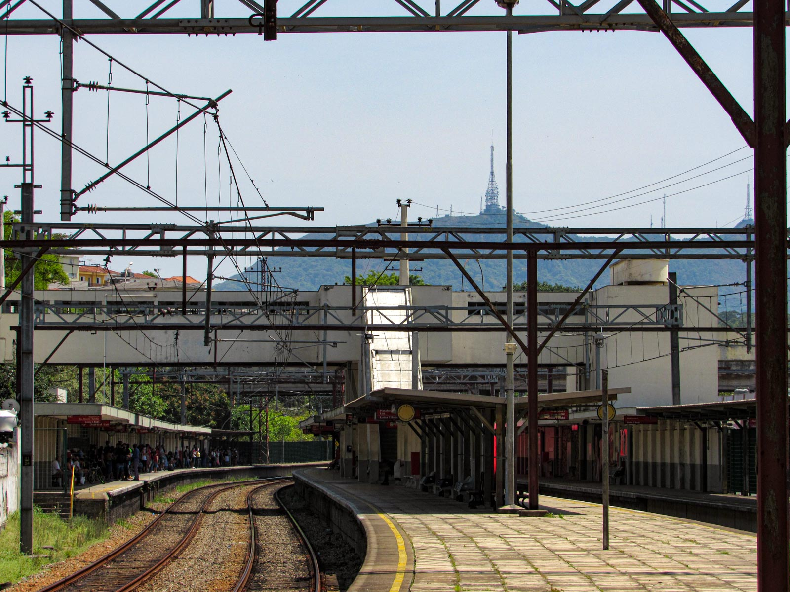

HISTÓRIA
A região que abrange os distritos de Pirituba, Jaraguá e São Domingos, tem uma população de aproximadamente 437,5 mil habitantes, em uma área de 54,7 km². Está localizado na zona norte da cidade. Sua origem no século XIX deve-se à existência de grandes fazendas de café, sendo as principais: a fazenda Barreto, de propriedade do médico resendense Luiz Pereira Barreto, a Fazenda do brigadeiro Tobias e a Fazenda Jaraguá. Com grande influência política dos fazendeiros e a grande importância do café, construíram a estação para receber os carregamentos que se destinavam ao porto de Santos.
O nome de Pirituba é o resultado da palavra "piri", que significa vegetação de brejo e com o aumentativo "tuba", que na língua tupi significa "muito". Pirituba tem como referência histórica a inauguração da Estação de Trem em 01 de fevereiro de 1885.

A Fazenda Barreto, com a morte do seu proprietário em 1922, foi partilhada entre seus herdeiros. Nesse mesmo ano foi loteada a primeira partilha da Fazenda e em 1926 foi loteada a segunda partilha. Essas duas vilas, somadas ao núcleo inicial que se desenvolveu ao lado da estação, vieram a se constituir no núcleo principal de desenvolvimento do bairro. Posteriormente, outras partes da Fazenda Barreto foram loteadas dando lugar a formação de novas vilas, como a Vila Bonilha, Vila Zatt, Vila Maria Trindade, Vila Mirante e Jardim São José.
O Parque São Domingos tem sua origem nas fazendas do Coronel Anastácio de Freitas Trancoso, que cultivava cereais, café e chá. Com a morte do coronel em 1839, seus descendentes venderam, em 1856, a fazenda ao Brigadeiro Rafael Tobias de Aguiar e à sua mulher Domitila de Castro, a marquesa de Santos.
Em 1917 a Companhia Armour do Brasil compra as fazendas Anastácio e Capuava. A partir de 1950, parte das terras são loteadas pela Novo Mundo Investimentos Ltda, que as adquiriu da Cia Armour, dando origem ao Parque São Domingos. O nome do bairro é em homenagem ao santo católico, São Domingos Sávio.


Jaraguá, na língua Tupi significa Gruta do Senhor, Guarda do Vale ou Senhor dos Vales. Abriga, além do pico, a estação de trem do Jaraguá que foi aberta em 1891 com o nome de Taipas. Posteriormente teve o nome alterado para Jaraguá.
As primeiras referências históricas da região datam do início do século XVI, quando Martim Afonso de Souza colheu informações sobre os recursos naturais e minerais da região.
Os bairros surgem do desmembramento da Fazenda Jaraguá, que entre os diversos proprietários ao longo dos anos teve: Gertrudes Galvão de Oliveira e Lacerda, sua filha Ana Eufrosina de Araújo Ribeiro casada com Dr. Rafael de Araújo Ribeiro, Lucrécia Leme de Araujo casada com Teófilo Prado de Azambuja que compra parte da fazenda Jaraguá. Em 1939 a fazenda, onde se encontra o morro do Jaraguá, é adquirida pelo governo do Estado. Cria-se em 1961 o Parque Estadual do Jaraguá, ponto turístico de nossa cidade.